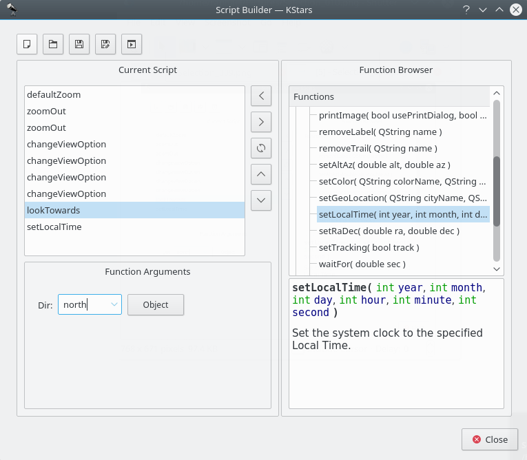

The Script Builder Tool
KDE applications can be controlled externally from another program, from a console prompt, or from a shell script using the Inter-process communication protocol (D-Bus). KStars takes advantage of this feature to allow rather complex behaviors to be scripted and played back at any time. This can be used, for example, to create a classroom demo to illustrate an astronomical concept.
The problem with D-Bus scripts is, writing them is a bit like programming, and can seem a daunting task to those who do not have programming experience. The Script Builder Tool provides a GUI point-and-click interface for constructing KStars D-Bus scripts, making it very easy to create complex scripts.
Introduction to the Script Builder
Before explaining how to use the Script Builder, I provide a very brief introduction to all of the GUI components; for more infomation, use the "What's This?" function.

The Script Builder is shown in the above screenshot. The box on the left is the Current Script box; it shows the list of commands that comprise the current working script. The box on the right is the Function Browser; it displays the list of all available script functions. Below the Function Browser, there is a small panel which will display short documentation about the script function highlighted in the Function Browser. The panel below the Current Script box is the Function Arguments panel; when a function is highlighted in the Current Script box, this panel will contain items for specifying values for any arguments that the highlighted function requires.
Along the top of the window, there is a row of buttons which operate on the script as a whole. From left to right, they are: New Script, Open Script, Save Script, Save Script As..., and Test Script. The function of these buttons should be obvious, except perhaps the last button. Pressing Test Script will attempt to run the current script in the main KStars window. You should move the Script Builder window out of the way before pressing this, so you can see the results.
In the center of the window, there is a column of buttons which operate on individual script functions. From top to bottom, they are: Add Function, Remove Function, Copy Function, Move Up, and Move Down. Add Function adds the currently-highlighted function in the Function Browser to the Current Script box (you can also add a function by double-clicking on it). The rest of the buttons operate on the function highlighted in the Current Script box, either removing it, duplicating it, or changing its position in the current script.
Using the Script Builder
In order to illustrate using the Script Builder, we present a small tutorial example where we make a script that tracks the Moon while the clock runs at an accelerated rate.
If we are going to track the Moon, we will need to point the display at it first. The lookToward function is used to do this. Highlight this function in the Function Browser, and note the documentation displayed in the panel below the Browser. Press the Add Function button to add this function to the Current Script box. The Function Arguments panel will now contain a combobox labeled “Dir”, short for direction. This is the direction in which the display should be pointed. The combobox contains only the cardinal compass points, not the Moon or any other objects. You can either enter “Moon” in the box manually, or press the Object button to use the Find Object window to select the Moon from the list of named objects. Note that, as usual, centering on an object automatically engages object-tracking mode, so there is no need to add the setTracking function after lookToward.
Now that we have taken care of pointing at the Moon, we next want to make time pass at an accelerated rate. Use the setClockScale function for this. Add it to the script by double-clicking on it in the Function Browser. The Function Arguments panel contains a timestep spinbox for setting the desired time step for the simulation clock. Change the timestep to 3 hours.
OK, we have pointed at the Moon and accelerated the clock. Now we just want the script to wait for several seconds while the display tracks on the Moon. Add the waitFor function to the script, and use the Function Arguments panel to specify that it should wait for 20 seconds before continuing.
To finish up, let us reset the clock's timestep to the normal value of 1 second. Add another instance of setClockScale, and set its value to 1 sec.
Actually, we are not quite done yet. We should probably make sure that the display is using Equatorial coordinates before the script tracks the Moon with an accelerated time step. Otherwise, if the display is using Horizontal coordinates, it will rotate very quickly through large angles as the Moon rises and sets. This can be very confusing, and is avoided by setting the View Option UseAltAz to “false”. To change any View Option, use the changeViewOption function. Add this function to the script, and examine the Function Arguments panel. There is a combobox which contains the list of all options which can be adjusted by changeViewOption. Since we know we want the UseAltAz option, we could simply select it from the combobox. However, the list is quite long, and there is no explanation of what each item is for. It therefore may be easier to press the Browse Tree button, which will open a window containing a tree view of the available options, organized by topic. In addition, each item has a short explanation of what the option does, and the data type of the option's value. We find UseAltAz under the Skymap Options category. Just highlight this item and press OK, and it will be selected in the combobox of the Function Arguments panel. Finally, make its value “false” or “0”.
One more step: changing UseAltAz at the end of the script does us no good; we need this to be changed before anything else happens. So, make sure this function is highlighted in the Current Script box, and press the Move Up button until it is the first function.
Now that we have finished the script, we should save it to disk. Press the Save Script button. This will first open a window in which you can provide a name for the script, and fill in your name as the author. Enter “Tracking the Moon” for a name, and your name as the author, and press OK. Next, you will see the standard KDE Save File dialog. Specify a filename for the script and press OK to save the script. Note that if your filename does not end with “.kstars”, this suffix will be automatically attached. If you are curious, you can examine the script file with any text editor.
Now that we have a completed script, we can run it in a couple of ways. From a console prompt, you can simply execute the script as long as an instance of KStars is currently running. Alternatively, you can execute the script from within KStars using the Run Script... item in the File menu.